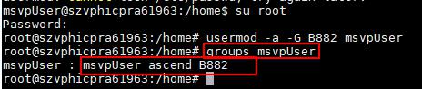
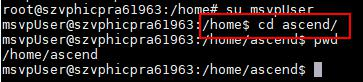

Profiling安装或启动失败
如果profiling安装失败，请在“~/tools/log/profilerlog/profiling.log”中查看相关日志信息，可能原因有以下几种，请一一排查。
问题描述1
日志中出现错误提示：“Restart httpd service ... Failed!” httpd服务启动失败。
可能原因1
执行如下命令，若无进程说明httpd服务启动失败。 ps -aux|grep httpd
处理建议1
- 查看普通用户所指定的安装目录是否有750权限，如果没有则使用如下命令修改： chmod 750 [安装目录]
- 若安装目录的权限正确，检查普通用户的“$JAVA_HOME”是否配置正确。
检查方法：
执行命令echo $JAVA_HOME，如果返回为空，则需要手动配置。JAVA_HOME环境变量配置方法请参见2中的设置环境变量章节。
将以上两点都配置完成后，卸载重新安装MindSpore Studio即可。
问题描述2
日志中出现错误提示：“Apache user: msvpUser cannot access dependency dir: ~/tools/support/apache”。可能原因2
安装目录权限不足，导致msvpUser无法进入安装目录。 - 从安装用户切换到msvpUser：sudo su msvpUser，如果无法切换，请切换到root用户，再切换到msvpUser：su msvpUser。
- 从根目录逐级进入安装目录直至"/home/username/tools/support/apache"，若出现“Permission denied” 则说明该层目录权限过低。
username为MindSpore Studio安装用户名，请修改为实际路径。
- 查看该用户所属的群组为msvpUser，ascend，如图1.1所示。
处理建议2
在出现“Permission denied”的目录下执行ls -l 命令查看当前目录权限与属主，如图1.1所示。当前目录所属的群组为“B882”。 图1-3 查看没有权限的目录所属的群组 (part1/img/1-3.jpg/)
查看当前目录权限是否为750： 图1.1所示当前文件夹权限为750，如果权限不足750，请执行如下命令增加权限：chmod 750 ascend
查看msvpUser用户是否是ascend文件夹属组的成员： 根据图1-2所示，msvpUser用户的属组为msvpUser/ascend，而图1.1所示属组为B882，需要将msvpUser加入“B882”属组：使用命令为： su root usermod -a -G B882 msvpUser 再次查看msvpUser用户的属组，已经加入B882属组，如图1.2所示。 
切换到msvpUser用户，再次进入ascend目录，看到已经可以进入该目录，如图1-5所示。 
说明
上述示例中的目录“ascend”以及群组“B882”都为样例，请以实际环境中的为准。 以上问题都检查完毕，卸载MindSpore Studio后重新安装。